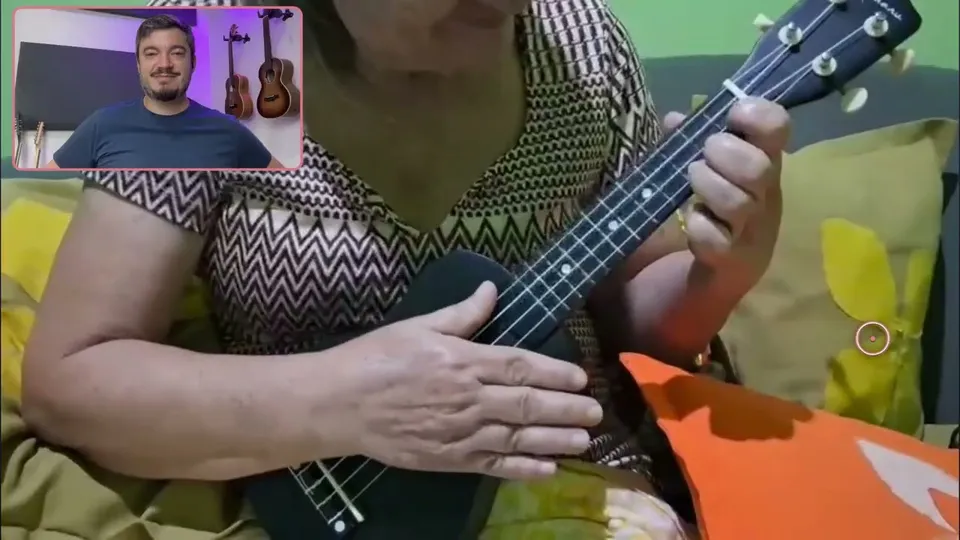
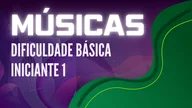
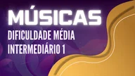
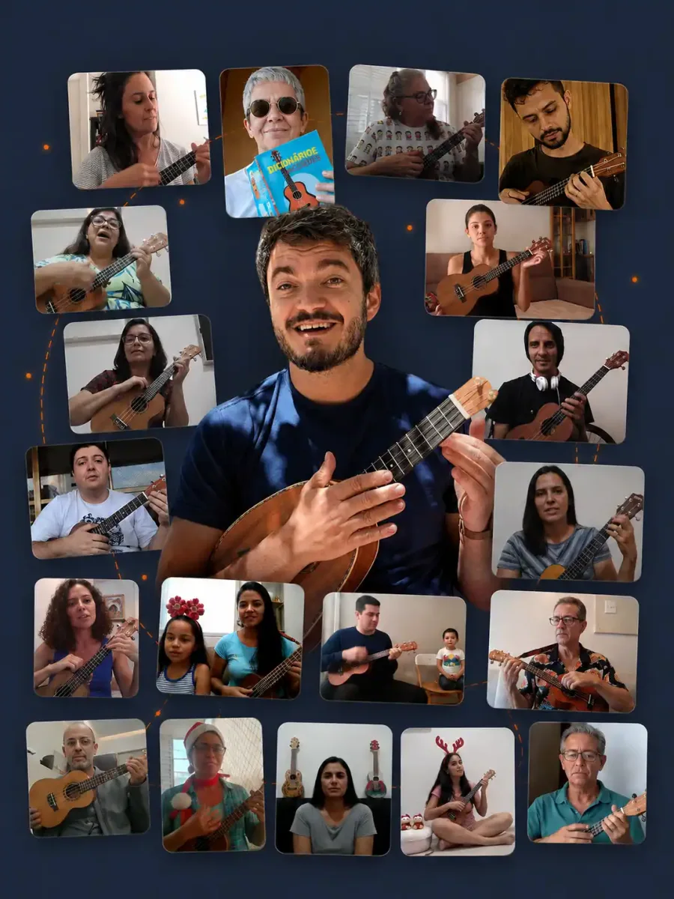

Muitos desenhos de acorde do violão
você já conhece do ukulele
Nas quatro cordas mais finas do violão, vários acordes têm exatamente o desenho de um acorde do ukulele, só que com outro nome. Escolha um acorde e veja.
O desenho do C no ukulele é o do G no violão, nas quatro cordas mais finas. As cordas graves entram depois, no acorde completo.
Você começa o violão com vantagem
O curso é para quem começa do zero, mas quem tocou ukulele já tem esses desenhos na memória dos dedos. O D, o A, o Am e o E do violão, por exemplo, têm nas cordas finas o mesmo desenho do G, do D, do Dm e do A do ukulele.
O módulo bônus “Do Ukulele ao Violão” mostra essa passagem acorde por acorde, e as aulas levam você até os acordes completos, com as cordas graves.
No primeiro dia você já toca
uma música inteira
As aulas são curtas, e a ordem foi pensada para você ouvir o violão soar logo. Postura e detalhes vêm depois, quando a primeira música já saiu.
Uma introdução rápida
Como o curso funciona e o que você vai tocar até o fim.
A afinação pelo aplicativo
O violão afinado em poucos minutos, com o celular do lado.
Sua primeira música
Uma música inteira com um acorde só, no mesmo dia em que você começa.
Do zero
aos 4 acordes mágicos no violão!
Desde o primeiro dia, acorde e batida entram juntos, dentro da música de verdade. Essa será a nossa primeira conquista, e a que vai abrir as portas para um novo instrumento: o violão. A partir de 28/10, os módulos são lançados semana a semana, toda quarta-feira. E claro, o módulo aberto já fica disponível para você assistir e reassistir quantas vezes quiser!
O curso inteiro é sem pestana!
- Até 20/10, antes de a turma começar
Preparação
Qual violão comprar, a anatomia do instrumento e a afinação, para chegar ao primeiro dia com tudo preparado.
- 1Abre em 28/10 (com o encontro inaugural)
Sua primeira música inteira, super rápido!
Com um acorde só e uma batida simples, para a mão da batida pegar o ritmo enquanto você já está tocando e se familiarizando com o violão.
- 2Abre em 04/11
Músicas de 2 acordes, com acordes de dois dedos
Você vai praticar a troca entre dois acordes simples dentro da própria música, aprendendo batidas novas, e a troca fica natural de tanto tocar.
- 3Abre em 11/11
Músicas de 2 acordes, com acordes de três dedos
A cada música entra um acorde com um dedo a mais, e a batida vai ganhando movimento.
- 4Abre em 18/11
Mais músicas com pares de acordes variados!
Você passa a tocar os acordes mais completos, iguais aos que aparecem nas cifras na vida real, e vai dominando as batidas coringas.
- 5Abre em 25/11
Músicas de três acordes
Três acordes na mesma música, que é como muita música popular foi escrita. Aqui você já vai ser capaz de tocar dezenas de músicas, com batidas coringas para tocar vários estilos diferentes.
- 6Abre em 02/12
Os 4 acordes mágicos e centenas de músicas
Vamos aprender os 4 acordes mágicos, que abrem as portas para centenas de músicas populares de todos os estilos. Aqui você conquista um repertório de respeito e fica preparado para continuar tocando e curtindo cada vez mais o seu violão.
10 encontros ao vivo,
de outubro a janeiro
Toda quarta, às 19h30, a partir do encontro inaugural em 28/10. São encontros de acompanhamento, para tirar suas dúvidas e trazer coisas novas para a turma, como uma música ensinada ao vivo. Todos ficam gravados, e as gravações são suas para sempre.
O mesmo dia e horário toda semana (com pausa no Natal e no Ano-Novo), para virar parte da sua rotina.
Para mandar as atividades de violão em vídeo e receber a análise de cada uma.
O acesso ao curso de violão e às gravações dos encontros.
Cada atividade volta com um vídeo personalizado
Você grava um vídeo tocando e manda pela plataforma. A gente assiste e responde em vídeo, mostrando no instrumento o que está bom e o que precisa ajustar.

E de presente,
12 meses de Clube do Ukulele
Para você seguir tocando ukulele enquanto aprende violão.
O que vem no Clube
- A jornada completa, com 5 cursos e 209 aulas, do zero ao intermediário
- A biblioteca com 157 músicas separadas por nível
- A Confraria toda quinta e as gravações das lives
- A comunidade de quem toca com a gente


É o plano Essencial, sem análise das atividades de ukulele. Quando os 12 meses terminarem, não tem cobrança: a nossa equipe entra em contato para você decidir se quer continuar.
E dentro do curso de violão
- Módulo bônus e Guia de Bolso “Do Ukulele ao Violão”A passagem dos desenhos do ukulele para o violão, em vídeo e num guia para deixar do lado do instrumento.
- Dicionário de Acordes para ViolãoEm PDF, para consultar quando aparecer um acorde novo na cifra.
- Treinador de BatidasUma área para treinar as batidas que você aprende no curso.
- Módulo de preparaçãoQual violão comprar, quais acessórios valem a pena e como afinar. Entra na plataforma até 20/10.
O que acontece
depois que você entra
- Na hora
Acesso à plataforma, as boas-vindas e o calendário completo.
- Até 20/10
Entra na plataforma o módulo de preparação: qual violão comprar, acessórios e afinação.
- 22/10, 19h
Live de lançamento no canal do ukulele, aberta para todo mundo.
- 28/10, 19h30
Encontro inaugural ao vivo e o módulo 1, com a sua primeira música.
- Toda quarta
Encontro ao vivo às 19h30 até 27/01, e um módulo novo por semana até completar os 6.
- Por 1 ano
Envio das atividades de violão, cada uma com a sua análise em vídeo.

alunos aprenderam ukulele
com a gente desde 2017
Você é uma dessas pessoas. O jeito de ensinar que te fez tocar ukulele é o mesmo do curso de violão: aulas curtas, música desde o começo e alguém do seu lado, olhando o que você está fazendo e te guiando.
Primeiro lote,
só para quem já é de casa
No dia 22/10 as inscrições para o curso de violão abrem para todo mundo, por 12x de R$ 99 ou R$ 957,25 à vista.
Quem já tocou com a gente entra no primeiro lote especial, com um preço que não vai aparecer na live. A condição vale até 27/10, às 23h59, porque no dia 28 a turma começa com o encontro inaugural.
- Curso inédito de violão do Mateus, com acesso vitalício
- 10 encontros ao vivo às quartas, gravados
- Análise em vídeo das suas atividades de violão por 1 ano
- Módulo bônus e Guia de Bolso “Do Ukulele ao Violão”
- Dicionário de Acordes para Violão e Treinador de Batidas
- De presente: 12 meses de Clube do Ukulele (plano Essencial)
Na live: 12x de R$ 99
12xR$ 69
ou R$ 667,21 à vista. É uma compra só, parcelada no cartão, sem assinatura.
Garantia de 30 dias. Pagamento seguro pela Hotmart.
Esta condição terminou em 27/10. Fale com a gente no WhatsApp para saber como entrar agora.
30 dias para decidir com calma
Entre, assista às primeiras aulas, vá ao encontro inaugural e toque a sua primeira música. Se em 30 dias você achar que não era o que esperava, pede o reembolso e recebe o valor inteiro de volta.
Perguntas de
quem já é de casa
Ainda não tenho violão. Posso entrar?
Pode. O módulo de preparação, que entra na plataforma até 20/10, mostra qual violão comprar, quais acessórios valem a pena e como afinar. Assim você compra com calma antes do encontro inaugural, em 28/10.
Nunca toquei violão. O curso é para mim?
É. O curso começa do zero, e quem já tocou ukulele ainda sai na frente, porque a mão dos acordes já conhece os desenhos.
Vou precisar fazer pestana?
Não. O curso inteiro é sem pestana. Você chega aos 4 acordes mágicos e a centenas de músicas sem ela.
E se eu não puder ir a um encontro?
Todos os encontros ficam gravados, e as gravações são suas para sempre. Você assiste quando puder.
Por quanto tempo tenho acesso?
Ao curso de violão e às gravações dos encontros, para sempre. O envio de atividades com análise vale por 1 ano a partir da compra, e os 12 meses de Clube do Ukulele de presente também contam a partir da compra.
Os 12 meses de Clube viram cobrança depois?
Não. Quando terminarem, o acesso ao Clube acaba sem cobrança nenhuma, e a nossa equipe entra em contato para oferecer a assinatura, se você quiser continuar.
Já assino o Clube. Como fica?
A sua assinatura continua como está. Os 12 meses de presente são do plano Essencial, e a nossa equipe te explica pelo WhatsApp como eles entram no seu caso.
Como funciona o pagamento?
É uma compra só, sem assinatura: 12x de R$ 69 no cartão ou R$ 667,21 à vista. O pagamento é feito na Hotmart, em ambiente seguro.
Até quando vale essa condição?
Até 27/10, às 23h59 (horário de Brasília). No dia 28 começa a turma, com o encontro inaugural às 19h30.
Te vejo no encontro inaugural,
dia 28/10
Até lá, você já recebe o acesso, a preparação e o calendário. E no primeiro dia de aula, a primeira música.